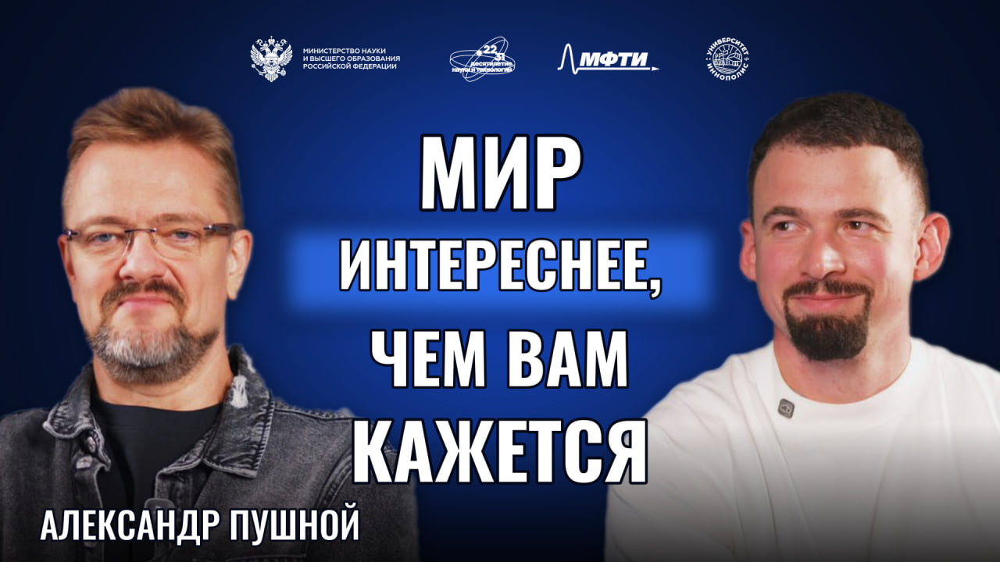

Александр Пушной
Физик по образованию, музыкант, ведущий «Галилео»
«Мир интереснее, чем вам кажется»Почему «Галилео» помнят спустя годы, что связывает музыкальную гармонию и физику и какую работу можно поручить искусственному интеллекту? Александр Пушной рассказывает об Академгородке, наставниках и привычке задавать вопросы.

01О герое
Александр Борисович Пушной — российский музыкант-мультиинструменталист, певец, автор песен, композитор, аранжировщик, теле- и радиоведущий, шоумен, комик, видеоблогер и актёр озвучивания. Физик по образованию. Его творческая биография объединяет физику, музыку, юмор, телевидение, радио и цифровые медиа.
02Ключевые тезисы
- Академгородок помогает учёным работать вместе. Знакомства и общение с коллегами из смежных областей позволяют быстрее находить ответы и развивать исследования.
- «Галилео» помогало зрителям найти свой интерес к науке. Теперь выросшие зрители рассказывают Пушному, как передача повлияла на выбор их профессии.
- Физика и музыка развивались в жизни Пушного параллельно. Сегодня он исследует связь музыкальной гармонии с сочетаниями частот и восприятием звука.
- Искусственный интеллект полезен для прикладных творческих задач. Пушной приводит пример коротких песен для мероприятия и рассуждает о том, что остаётся за человеком.
- Научная честность начинается с признания ошибки. Перед защитой диплома Пушной обнаружил две взаимно компенсирующие ошибки; научный руководитель посоветовал открыто рассказать о них комиссии.
- Свой путь можно найти через практику. Пушной советует студентам пробовать разные занятия, регулярно посещать семинары и разбирать непонятное вместе с преподавателем.
03Возьми с собой
Что применить
Выберите предмет, в котором хотите разобраться. Ходите на занятия регулярно и задавайте вопросы, пока непонятное не станет понятным. Именно такой опыт, по словам Пушного, однажды сделал сдачу экзамена лёгкой и приятной.
В этом выпуске
Академгородок и НГУ, «Галилео», физика музыки, искусственный интеллект, наставники, научная честность и выбор своего пути.